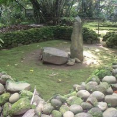
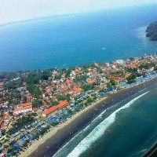
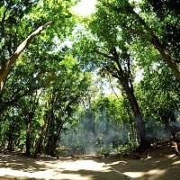
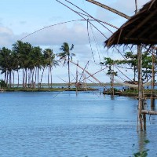
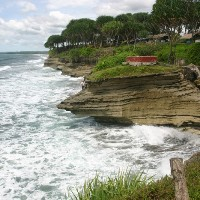
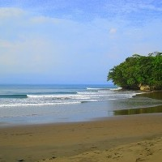

Tentang
Aplikasi Wisata Ciamis
Temukan kemudahan menjelajah dan bermalam di kabupaten Ciamis dengan aplikasi ini
Cancel-

Situ Lengkong
Desa / Kecamatan Panjalu
-

Curug Tujuh
Desa Sandingtaman Kecamatan Panjalu
-

Cagar Budaya Astana Gede
Desa/Kecamatan Kawali
-

Cagar Budaya Karangkamulyan
Desa Karangkamulyan Kecamatan Cijeungjing
-

Situ Mustika
Desa Karangpaningal Kecamatan Purwaharja
-
Gua Donan
Desa Tunggilis Kecamatan Kalipucang
-
Pantai Karang Nini
Desa Emplak, Kecamatan Kalipucang
-

Pantai Indah pangandaran
Desa Pananjung Kecamatan Pangandaran
-

Cagar Alam pananjung
Desa Pangandaran Kecamatan Pangandaran Kabupaten Ciamis
-

Pantai Karang Tirta
Desa Sukaresik Kecamatan Pangandaran
-

Pantai batu Hiu
Desa Ciliang Kecamatan Parigi
-

Pantai batu karas
Desa Batukaras, Kecamatan Cijulang
-

Pantai Keusik Luhur
Desa Kertamukti Kecamatan Cimerak
-

Cukang Taneuh (Green Canyon)
Desa Kertayasa Kecamatan Cijulang
-

Pemandian Alam Citumang
Desa Bojong Kecamatan Parigi
-

Pantai Karapyak
Desa Bagolo Kecamatan Kalipucang
-

Pantai Palatar Agung
Desa Bagolo
-

Majingklak
Desa Pamotan Kecamatan Kalipucan
-

Pantai Madasari
Desa Masawah Kecamatan Cimerak
-

Lapangan terbang Nusawiru
Desa Kondangjajar Kecamatan Cijulang
-
Pantai Lembah Putri
Desa Ciputrapinggan
-

Badeto Ratu
Jl. Pantai Barat Pangandaran
-
Wismawan
Jl. Pantai Timur Pangandaran
-
Pangandaran Beach
Jl. Pantai Barat Pangandaran
-
Sawargi
Jl. Pantai Barat Pangandaran
-
Saputra
Jl. Pantai Barat Pangandaran
-
Aquarium
Jl. Pantai Barat Pangandaran
-
Kembar Mas
Jl. Pantai Barat Pangandaran
-
Nyiur Indah I
Jl. Pantai Barat Pangandaran
-
Laut Biru
Jl. Kidang Pananjung Pangandaran
-
Sandaan
Jl. Pantai Barat Pangandaran
-
Pantai Uni
Jl. Pantai Barat Pangandaran